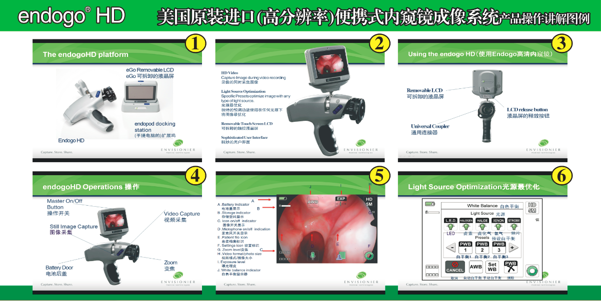
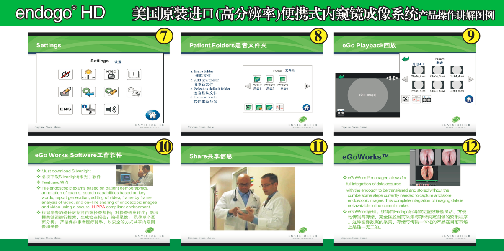

Specifications of the endogo®HD portable endoscope endogo®HD portable endoscope is the next generation of endogo®, which also means it’s the first portable endoscope imaging system in the world. endogo® and endogo®HD are revolutionary devices that unites the date capture, storage and management in a brand-new way. After great efforts for 3 years, endogo®HD appeared as the best wish of providing comfortable and unworried services. endogo®HD is an unique devices based on a simple principle---convenience of use. The story behind endogo®HD is as unique as itself. It was created under the cooperation of surgeons and endoscope doctors. The endoscope doctors,who wish just the same as you do, are specialists eager to introduce the ease of use and functionality of the electronic products to the endoscopic area. endogo®HD is pretty delicate and pragmatic with its unique design satisfying your need for aesthetics and ergonomics. As a “plug and play” device, endogo®HD is available whenever you are motional, half-motionless or motionless. Despite that it might also work to observe through a 9 cm（3.5"）LCD touchable screen, you are probably in want of a bigger observing environment. With HDMI and AV output of endogo®HD, you are accessible to any compatible TV set, PC or LCD when observing (see the notes and cautions down there). endogo®HD portable endoscope imaging system is an integrated camera(HD) and a multimedia filing system, and it can be used cooperatively with rigid or soft endoscopes to proceed endoscope examining. The imaging system is connected with endoscope through the coupler. The endoscope examining images are displayed on LCD monitor and they could be compressed through MPEG-4 video compression and archived to the device in the form of flash memory ,or transmitted to a computing device or video monitor for observing. endogo®HD apply to all the standard and portable endoscope examining light source. endogo®HD user interface allows to choose the given light source in advance to achieve the optimal images fidelity. Generally speaking, endogo®HD portable endoscope imaging system is a battery powered portable handheld endoscopic camera which bears the functions of observing and archiving. And it could be used together with rigid or soft endoscopes and applicable to any clinical situation that requires simplicity and economy and convenience to use endoscope with or without archived. Once the camera, in which the endoscope is placed in its coupler, is turned on, you can observe the examining details on 9 cm（3.5"）touchable LCD instantly. Users could choose to or not to record video at the examining part or take static pictures. Videos with DV quality are made by compressing through MPEG-4 video compression while static pictures are compressed by JPEG compression algorithm. Both are methods of data compression of industry standard. You can transfer the videos from SD RAM or to other locations through endoPod. It’s also feasible to output through HDMI or composite video to the compatible video monitor and observe the images instantly (see the notes and cautions down there). Video and voice recording can proceed simultaneously along with the statement and evaluation of the observed results.
 Please read the manual and observe the specifications included. Words like warnings, precautions and notes have special meanings, thus, please make sure you do the operation safely and effectively by reading carefully. Warnings indicate that this might concern personal safety of doctors or patients. injuries could happen regardless of the warnings. Precautions represent that the specific repair procedures or the cautions must be observed in order not to cause damage to the products. Notes denote the special information of improving the convenience of products or stating the important information. Warning: please read through the manual and be familiar with the content before connecting or using the product. Warning: high-energy radioactive light penetrating the endoscope might cause high temperature in front of the light exit and head of the lens of endoscope. To minimize the danger of burning, Please adjust the intensity of illumination to the required minimum to achieve the required optimal illumination for endoscope examining when it is connected to the camera. Warning: please do not detach the device in order to lower the danger of electric shock. The assurance gets invalid once the device is detached. Precaution: according to the federal law, this device could only be sold to doctors or sold under doctor’s advice. Warning: before using, please check the endoscope and external surface of the endoscope accessories to be put into the patients to make sure there is no such thing as coarse surface, sharp edge or protruded part which might cause damage.